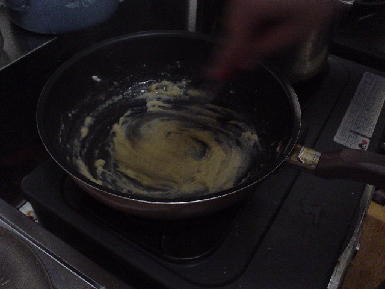

前の写真
2003-06-08
次の写真
手作りシチュー

撮影日時: 2003-06-08 20:54:59
シチューを作り始めてからルーが無いのに気付いたので、手作りしてみることにしてみた（初挑戦）。
[Cookpad:92226]
を参考にして、まずはホワイトソースを作る。
前の写真
2003-06-08
次の写真
高久雅生 (Takaku Masao)
http://nile.ulis.ac.jp/~masao/
,
masao@ulis.ac.jp